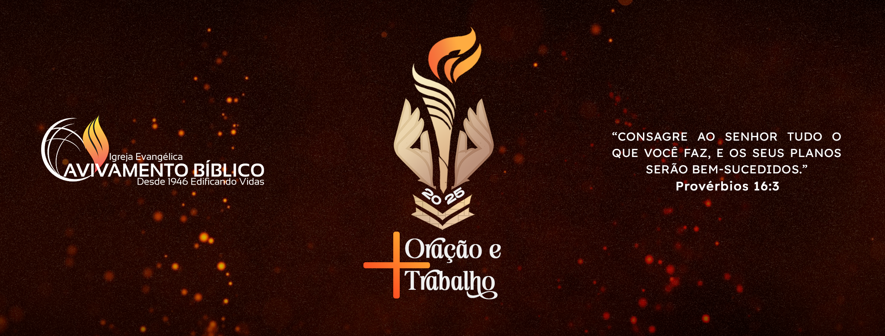

Ação Social
A Diretoria de Ação Social oferece suporte financeiro a ministros jubilados e suas viúvas, reconhecendo seu legado espiritual. Além disso, realiza projetos para comunidades carentes, promovendo o bem-estar e reforçando valores de solidariedade e empatia. A iniciativa destaca a importância de cuidar do próximo como um ato de amor contínuo.
Administrativa
A Diretoria Geral Administrativa da IEAB é responsável pelo planejamento, coordenação jurídica e contábil, e gestão financeira da igreja. Organiza eventos nacionais (CRM e ENEP), campanhas de Mordomia Cristã e encontros estratégicos. Também assegura a conformidade legal e oferece suporte técnico às igrejas no cumprimento de exigências governamentais.
Cultura e Educação Cristã
A Diretoria Geral de Cultura e Educação Cristã (DGCEC) da IEAB promove o ensino teológico e a expansão do Reino de Deus. Suas responsabilidades incluem a gestão do Seminário Evangélico Avivamento Bíblico (SEAB) e a administração da Editora Publicações Avivamento.
Missões
A Diretoria Geral de Evangelismo e Missões é um orgão da Igreja Evangélica Avivamento Bíblico, formada por uma equipe de pastores e missionáris, com o objetivo de treiná-los, enviá-los e supervisioná-los, tanto para os campos nacionais como os transculturais.